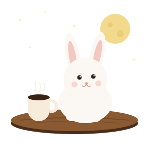

거의 모든 것의 타임라인
빅뱅에서 오늘까지, 시로가 시대를 안내하는 연표 웹앱. 홈 화면에 추가해 오프라인으로도 볼 수 있어요.
열어 보기따뜻한 커피 한 잔과 밤하늘. 시로의 세계관으로 묶인 작은 앱과 게임, 영상을 이곳 한 자리에 모아 둡니다.
만드는 것 보기 시로 영상 보러 가기
모든 결과물은 아기토끼·커피·우주 가운데 두 가지 이상을 겹칩니다. 메뉴판처럼 하나씩 늘려 갑니다.
빅뱅에서 오늘까지, 시로가 시대를 안내하는 연표 웹앱. 홈 화면에 추가해 오프라인으로도 볼 수 있어요.
열어 보기행성의 중력을 타고 미끄러지는 우주 중력 퍼즐. 시로가 탐사선을 몰아요. 웹판 먼저, 모바일 앱은 준비 중.
itch.io 페이지추출 레시피와 타이머를 한 손에. 타이머가 돌아가는 동안 시로가 커피를 내려 줍니다. 공개 도구판을 다듬고 있어요.
출석이 커피 스탬프 카드처럼 시로 도장으로 찍히는 iOS 출석부. 기기 안에만 저장되고 서버로 보내지 않습니다.
시로의 일상과 커피 내리는 순간을 담은 영상. 모든 이야기가 여기서 시작됐어요.
유튜브 @shiroleebunny앱은 기본적으로 서버 없이 기기 안에 저장합니다. 앱마다 수집 항목이 다르므로 각각의 페이지에서 확인하세요.